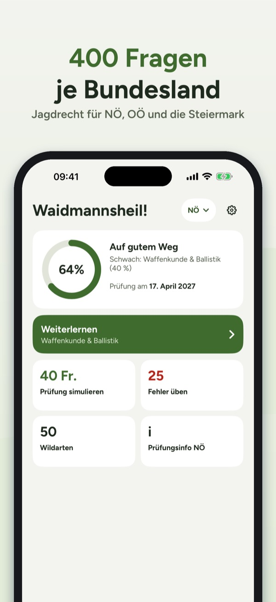
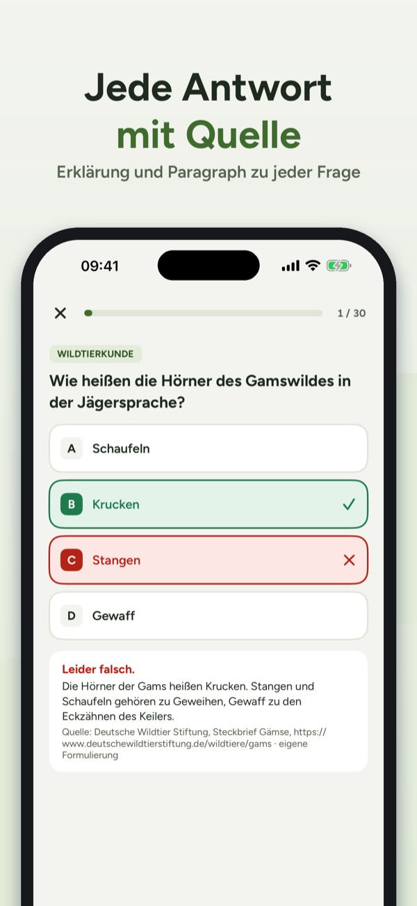
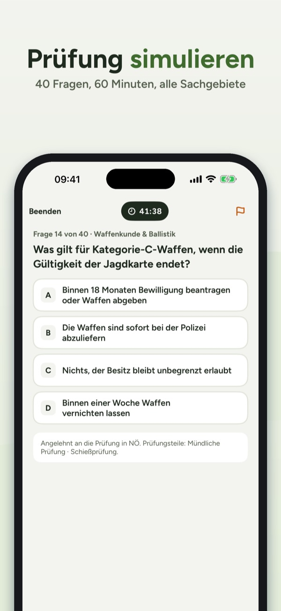

Jagdprüfung Österreich
Prüfungstrainer je Bundesland
Jagdrecht und Wild deines Bundeslandes: 400 Fragen mit Quelle, Bildfragen, Schusszeiten und eine Prüfungssimulation. Für NÖ, OÖ und die Steiermark. Offline.
Im App Store laden



Bereite dich auf die Jagdprüfung in deinem Bundesland vor – mit österreichischem Jagdrecht und österreichischem Wild. Für Niederösterreich, Oberösterreich und die Steiermark.
Wichtig: Die App enthält nur österreichisches Jagdrecht. Für die Jägerprüfung in Deutschland ist sie nicht geeignet.
Lernen nach sachgebieten
- 400 Übungsfragen je Bundesland mit Erklärung und Quellenangabe
- Wildtierkunde, Wildökologie & Hege, Jagdrecht deines Bundeslandes, Waffenkunde & Ballistik, Jagdbetrieb & Waidgerechtigkeit, Jagdhunde, Wildbrethygiene, Naturschutz und Erste Hilfe
- Fortschritt je Sachgebiet und Prüfungsbereitschaft auf einen Blick
Bildfragen
- Trittsiegel und Wildarten erkennen – mit eigenen Zeichnungen
Prüfungssimulation
- 40 Fragen in 60 Minuten aus allen Sachgebieten, Auflösung erst am Ende
- Angelehnt an den Prüfungsstoff: In NÖ, OÖ und der Steiermark wird die Theorie mündlich vor einer Kommission geprüft
- Ergebnis je Sachgebiet mit den schwächsten Themen
Meine fehler
- Falsch beantwortete Fragen werden gesammelt und verschwinden nach zwei richtigen Antworten in Folge
Wildarten und schusszeiten
- 50 Wildarten mit Merkmalen zum Ansprechen, Jägersprache und Lebensraum
- Schusszeiten deines Bundeslandes mit Paragraph und Prüfdatum, Filter „Schusszeit jetzt“ und „Geschont“
Prüfungsinfo
- Der Weg vom Jungjägerkurs zur Jagdkarte, Prüfungsteile, Kosten und Tipps für die mündliche Prüfung – mit Quellen
Einmal kaufen, kein abo
- Fragen und eine Simulation kannst du ohne Kauf ausprobieren. Die Vollversion schaltet alle Fragen, Simulationen und Wildarten für alle Bundesländer frei. Funktioniert offline.
Weitere Bundesländer folgen.
Hinweis: Jagdprüfung Österreich ist ein unabhängiges Lernangebot und steht in keiner Verbindung zu Landesjagdverbänden oder Behörden. Alle Fragen sind eigene Formulierungen mit Quellenangabe; Angaben ohne Gewähr.
Terms of Use (EULA): https://www.apple.com/legal/internet-services/itunes/dev/stdeula/
Privacy: https://baytechbv.github.io/privacy/jagdpruefung-at/
Hilfe · Datenschutzerklärung